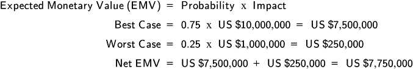
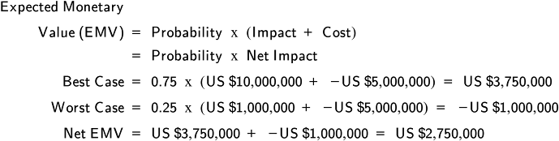

Risk Analysis Overview
Classification and prioritization (qualitative) comes first, then optional quantitative analysis for significant risks. Risk analysis determines which risks need proactive responses and how much to spend on them.
- Qualitative analysis: Subjective, uses expert judgment; fast; categorizes and ranks risks
- Quantitative analysis: Numerical; done only for high-priority risks with sufficient data quality
Risk category: A cluster of risk causes that have common themes for risk responses. Used to group risks for more efficient planning.
Qualitative Risk Analysis Methods
- Risk categorization: Group by theme (e.g., supply, demand, process, environmental; or GARP categories: personnel, physical assets, technology, relationships, external/regulatory)
- Probability & impact assessment: Rate likelihood (rare → certain) and magnitude (low → catastrophic) for each risk
- Risk urgency assessment: Increase priority for risks requiring rapid action (short time to trigger or respond)
- Data quality assessment: Evaluate reliability, accuracy, and integrity of data behind each risk estimate
Internal vs. External Supply Chain Risks (Exhibit 7-6)
Internal: Poor quality, unreliable suppliers, supply shortages, equipment breakdowns, technology disruptions, uncertain demand, SKU proliferation, service failures, compliance risks, labor issues
External: Political instability, weather/natural disasters, currency fluctuation, poor infrastructure, legal/regulatory changes, customs risks, competitor actions, consumer pressures
Risk Categories
- Strategic supply chain risks: Endanger long-term supply chain strategy
- Supply risks: Supplier availability/pricing/quality/lead time, transportation lead time, customs/import delays, labor disruption
- Demand risks: Forecasting error/bias, interorganizational communications, outbound shipping delays, customer price changes/promotions, quality issues, warranties/recalls, lost/unprofitable customers
- Process risks: Capacity & flexibility, manufacturing yield, inventory (SKU proliferation, obsolescence), IT/telecom outages, poor payables/receivables, IP theft, mismanagement
- Environmental risks: Legislation/regulation changes, country regulations, cultural shifts, conflict minerals, customs regulations, interest group pressure
- Hazard risks: Force majeure / acts of God — natural disasters causing property damage
- Financial risks: Insolvency/credit issues of org, suppliers, customers, or service providers; currency exchange risk; commodity price risk; market volatility
- Malfeasance risks: Theft, fraud, bribery, corruption, abduction, counterfeiting
- Litigation risks: Product liability, breach of contract, etc.
Probability & Impact Assessment
Risk Rating = Probability × Impact
- Impact: Magnitude of loss (or gain); considers importance of asset/process to the organization
- Probability: Likelihood of occurrence — rated from rare (10%) to almost certain (90%+)

Exhibit 7-11: Categories of Risk Levels (Low/Medium/High/Critical based on probability × impact)

Exhibit 7-12: Probability and Impact Matrix (each cell = probability % × impact %)
- Low risks: Accept (watch list)
- Medium risks: Use expert judgment
- High risks: Proactive plan required
Risk rating: A numerical rating of risk, normalized to allow comparisons across suppliers, customers, or products.
Data Quality & Circling Back
Accuracy: Degree of freedom from error or degree of conformity to a standard (ASCM).
Data integrity: Assurance that data accurately reflects the environment it is representing (ASCM).
- Reliability: Whether the same result would be obtained using the same measurement procedure multiple times
- If data quality is low, indicate how tentative the risk rating is; do not perform quantitative analysis on poorly understood risks
After all assessments: reevaluate risk priorities against tolerances → add results to risk register → decide if quantitative analysis is needed.
Quantitative Risk Analysis
A numerical analysis of the effect of identified risks on business objectives. Used only for high-priority risks with sufficient data quality.
Data Gathering
- PERT weighted average: (Optimistic + 4×Most Likely + Pessimistic) ÷ 6 — used when interviewing subject matter experts

PERT Weighted Average Formula
Expected Monetary Value (EMV)
EMV formula: Probability × Impact (expressed in monetary terms). Gives the expected cost/benefit of a risk, usable as a spending limit for mitigation efforts.
Expected Monetary Value (EMV) = Probability × Monetary Impact
- EMV for multiple outcomes: Calculate EMV for each possible outcome separately, then sum to get the expected value of the decision
- All options must sum to 100% of possible outcomes

EMV for Multiple Outcomes Example
Net Impact EMV
- When a response has a cost, factor it in: Net EMV = EMV + Response Cost (cost is negative)
- If net value is positive → opportunity still worth pursuing; if negative → reconsider

Net Impact EMV Formula
Sensitivity Analysis & Simulation
Sensitivity analysis: A technique for determining how much an expected outcome will change in response to a given change in an input variable. Only one variable is changed at a time to study its impact in isolation.
Simulation: 1) Using representative or artificial data to reproduce conditions likely to occur in actual performance; 2) a model that behaves or operates like a given system (ASCM). Allows multiple input variables to be altered simultaneously.
Monte Carlo simulation: A subset of digital simulation that uses random number generators to simulate risk scenarios and build probability distributions of outcomes.
TERM / CONCEPT
What is a risk category (ASCM)?
ANSWER
A cluster of risk causes that have common themes for risk responses. Used to group risks so that planned responses can be clustered more efficiently.
Click card to flip · Use arrows or shuffle to practise
Question 1
What is 'risk assessment' and what two dimensions are used to evaluate risk?
A.An audit of past supply chain disruptions
B.The process of evaluating identified risks on two dimensions: (1) Probability/likelihood — how likely is the risk to occur? and (2) Impact/consequence — how severe would the effect be if it occurred? The combination determines risk priority for mitigation investment
C.A financial calculation of risk insurance costs
D.A regulatory requirement for annual risk reporting
Question 2
What is a 'risk matrix' (probability-impact matrix) and how is it used?
A.A matrix showing which suppliers present which types of risk
B.A visual tool that plots risks on a grid with probability on one axis and impact on the other — risks falling in the high-probability/high-impact quadrant are priorities for immediate mitigation; low-probability/low-impact risks may be accepted or monitored
C.A matrix comparing risk levels across different industries
D.A financial tool for calculating risk-adjusted returns
Question 3
What is 'qualitative' vs. 'quantitative' risk assessment?
A.Qualitative uses surveys; quantitative uses audits
B.Qualitative: uses expert judgment and descriptive scales (high/medium/low probability and impact) — faster, requires less data, good for broad scanning. Quantitative: assigns numerical values (probability percentages, financial impact $) — more precise, data-intensive, enables financial risk quantification
C.Qualitative is for external risks; quantitative is for internal risks
D.Qualitative uses words; quantitative uses colors on a risk matrix
Question 4
What is 'expected loss' in risk quantification?
A.The amount of inventory expected to be lost in a warehouse
B.Probability of a risk event occurring × the financial impact if it does occur = the expected annual loss. For example, a 10% probability of a supply disruption with $5M impact = $500K expected annual loss — guiding how much to invest in mitigation
C.The average financial loss experienced in the previous year
D.The loss expected from normal supply chain operations
Question 5
What is 'risk interdependency' and why does it complicate risk assessment?
A.The financial relationship between different types of risk insurance
B.The phenomenon where one risk event triggers or amplifies other risks — for example, a natural disaster that disrupts a supplier (supply risk) may simultaneously affect logistics routes (logistics risk) and trigger a demand surge for alternative products (demand risk)
C.The dependency of one supplier on another supplier
D.The relationship between different regulatory compliance requirements
Question 6
What is 'risk heat map' and how does it communicate risk status to senior management?
A.A map showing geographic locations of supply chain risks
B.A visual representation of the risk portfolio using a color-coded matrix (red/orange/yellow/green) that shows the probability and impact of each identified risk — providing senior management with an at-a-glance view of the most critical risks requiring their attention or resource allocation
C.A financial report showing costs associated with each risk
D.A dashboard tracking real-time supply chain disruptions
Question 7
What is 'vulnerability assessment' in supply chain risk management?
A.An assessment of computer system security vulnerabilities
B.An evaluation of how vulnerable a supply chain is to specific disruption types — identifying weaknesses: single points of failure (sole-source suppliers, single logistics routes), concentration risks (geographic, supplier), and structural fragility (long lead times, low inventory buffers) — the starting point for resilience improvement
C.A financial assessment of potential losses from disruptions
D.An audit of supplier safety practices
Question 8
What is 'Monte Carlo simulation' in supply chain risk analysis?
A.A risk management approach developed in Monaco
B.A computational technique that runs thousands of simulations of supply chain scenarios, each with randomly varying input parameters (demand, lead times, yield rates) drawn from probability distributions — producing a distribution of outcomes rather than a single 'expected' result
C.A method for analyzing transportation route risks
D.A financial simulation for currency risk management
Question 9
What is 'risk benchmarking' in supply chain risk management?
A.Comparing the cost of risk mitigation across companies
B.Comparing an organization's supply chain risk management practices and risk levels against industry peers or best practices — identifying gaps in risk identification, assessment, or mitigation capability relative to leading practice
C.Comparing supplier risk scores against a standard
D.A competitive analysis of supply chain disruption rates
Question 10
What is 'supply chain stress testing' and when is it used?
A.Testing the physical strength of packaging materials
B.Simulating the impact of extreme or unlikely disruption scenarios on the supply chain — such as the loss of a major supplier, a major logistics disruption, or a demand collapse — to identify vulnerabilities and validate recovery plans before real events occur
C.Testing the capacity limits of warehouse operations
D.A quality test performed on raw materials from suppliers
Question 11
What is 'risk appetite alignment' across the supply chain?
A.Ensuring all suppliers have the same risk management practices
B.Ensuring that risk management decisions at the operational level (safety stock, sourcing choices, logistics options) are consistent with the organization's stated risk appetite — preventing individual managers from taking on more or less risk than the organization has determined is acceptable
C.Aligning risk insurance coverage across supply chain partners
D.Ensuring customers and suppliers have compatible risk management systems
Question 12
What is 'key risk indicator' (KRI) in supply chain monitoring?
A.A financial measure of supply chain profitability risk
B.A leading indicator metric that signals increasing risk before a disruption actually occurs — for example: supplier on-time delivery trending down (leading indicator of potential failure), inventory coverage days decreasing (leading indicator of potential stockout), or single-source concentration increasing
C.A lagging indicator of supply chain performance
D.A regulatory reporting metric for risk management compliance